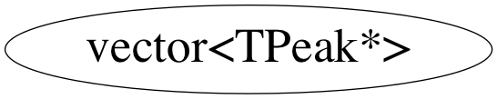

Quick Links:
ROOT Homepage
Class Index
Class Hierarchy
Search
Source:
header file
Sections:
class description
function members
data members
class charts
GRSISort
»
CINT
»
CINT
»
LIB
»
PREC_STL
»
vector<TPeak*>
class vector<TPeak*>
vector<
bool
,allocator<
bool
> > specialization
Function Members (Methods)
Class Charts
Inheritance
Inherited Members
Includes
Libraries

Function documentation